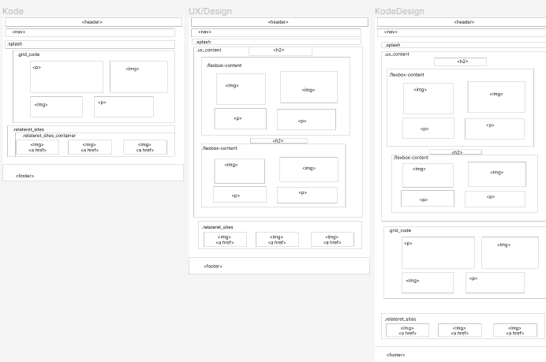
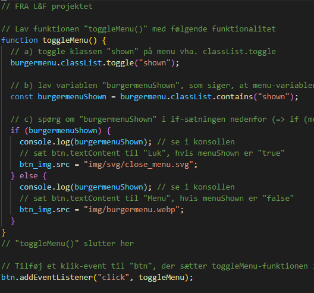

Tema 2
Dette tema omhandler en responsiv hjemmeside
Inspirationen bag dette portfolio har været en blnadning af stilgenrerne Video spil (retro) og Futurisme, med meget inspiration fra videospillet: Detroit: Become Human, som foregår i fremtiden, hvor androider er de nyeste nye, som ethvert menneske bare skal eje. Der er mange forskellige mønster og former, farverne i spillet er meget naturlige, undtagen med androiderne hvor der bl.a. brugt neon lilla og RBG som statusfarver.
Via desk-research, har jeg primært gjort brug fra spillets in-game farver og anvendt de primære RGB farver til at udforme min farvepalette, som kan ses i det ovenstående billede. Kendskab for futurisme er bl.a eksperimenterne geometriske former, samt floureserende farver. Jeg har valgt at blande pixels og glitching ind, som et visuelt værktøj for at bringe videospil genren ind i mit design.

I videoen ses designet af logoet, som også tager udgangspunkt i splashbilledets design. Hvor der bliver genbrugt de primære RBG farver og en gradient. Vi har tidligere også lært at kunne sætte videoer ind på hjemmesider, hvilket jeg også har demonstreret her, via 'video' tagget, og som også kan ses i tema 5 projektets hjemmesider.
Her ses et billede af min burgermenu, som er synlig i mobilversionen. Designvalget af denne knap har til formål at indkorpere mere af en futuristisk / videospils elementer på en mindre holdbar skærm. Jeg har eksperimenteret med formerne, for at få knappen til at stå mere ud, da den bryder de andre elementers lighed, i og med den er rund og ikke firkantet som andre elementer.
Da jeg også gerne vil sørge for en sammenhængende tråd gennem hele sitet. Har jeg valgt at opdele de forskellige temaer i: “Kode, Design og Kode-Design” med hhv rød grøn og blå som kategoriserer dem. De tre kategorier har også fået deres eget layout struktur, hvor Kode-Design har begge strukturer implementeret. Under dette projekt har jeg primært ageret som designer og udviklerer, hvori jeg har lært at det tager tid og fejl i at udforme et portfolio som man i sidste ende syntes er tilfredstillende, ambitioner kan være for høje, når ens kompetencer ikke er på samme niveau, men for at imødekomme dette har jeg også lært at Google er ens ven.
 Andet hjælp jeg har fået, for eksempel, har været fra det forrige “Redesign” projekt, med burgermenuen, samt kontakt formularen , som findes på Kontakt undersiden, med ændringer i layout og designet, således det passede til mit futuristiske/videospil tema.
Tema 2
Dette tema omhandler en responsiv hjemmeside
Tema 3
Her kan du læse nærmere om UX og webshops projektet
Tema 4
Her kan du læse nærmere om UX og webshops projektet
Tema 5
Lights, camera, action! Behind the scenes til projektet om Indholdsproduktion kan læses her